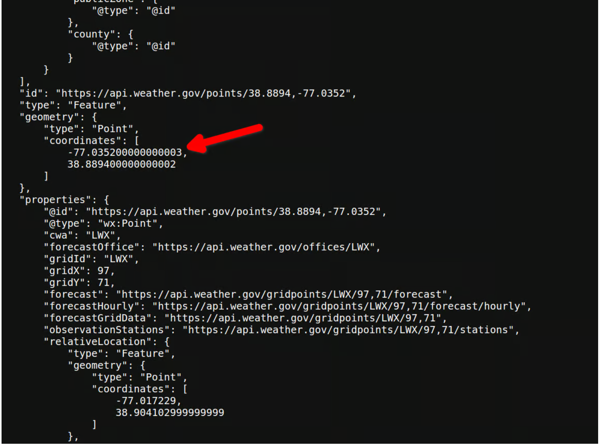
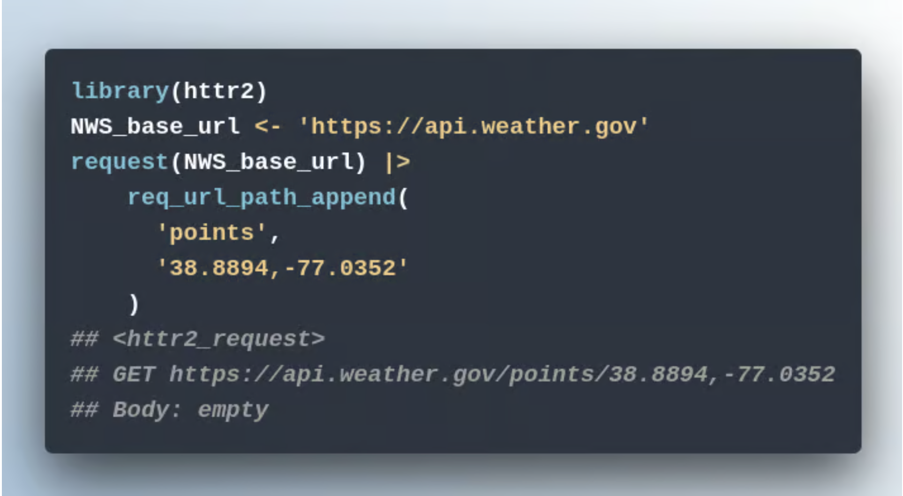
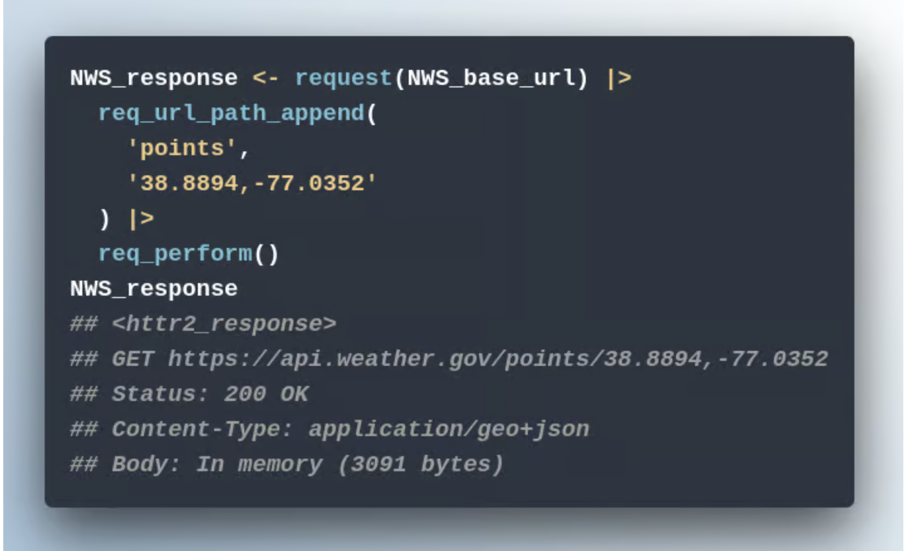
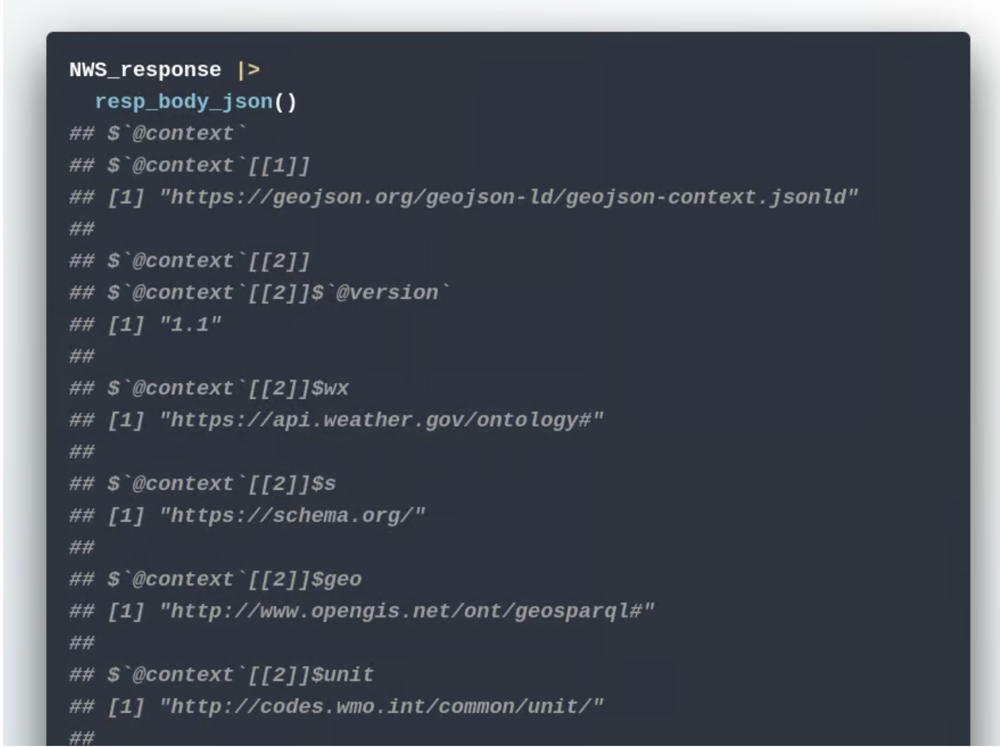
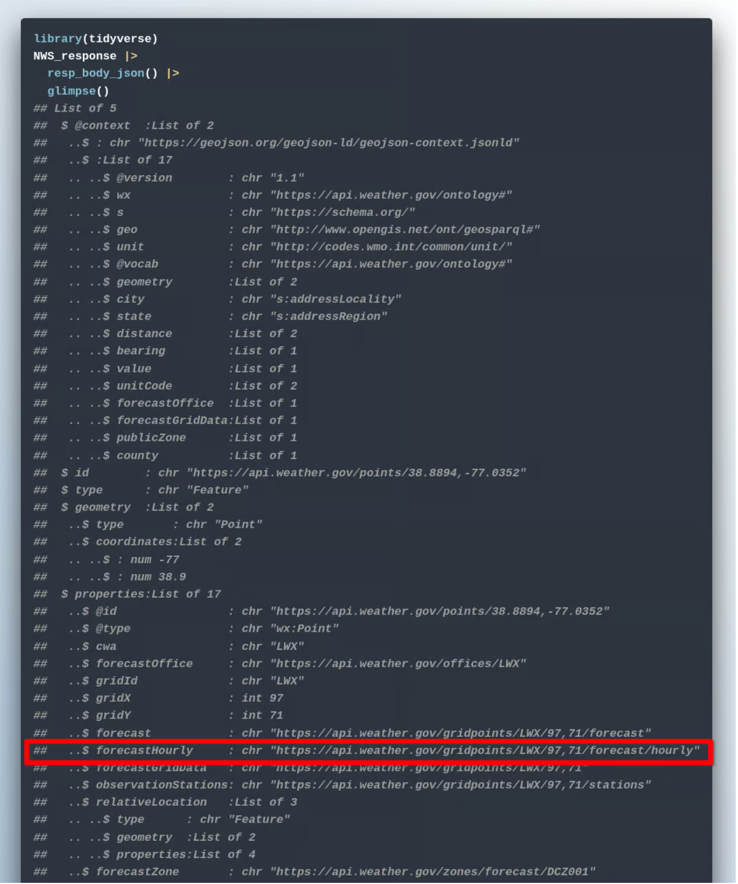
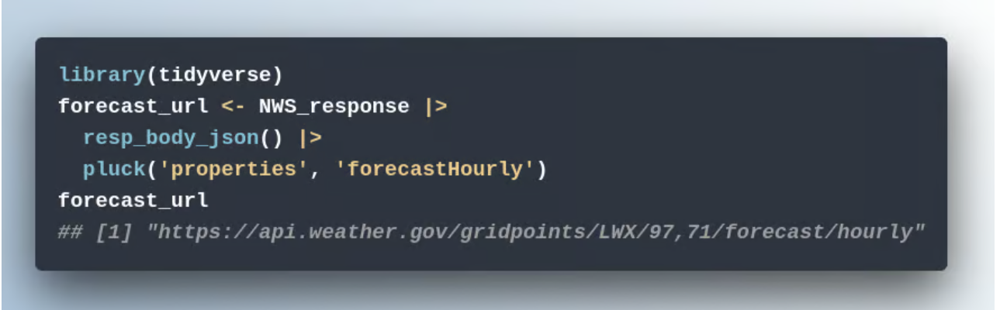
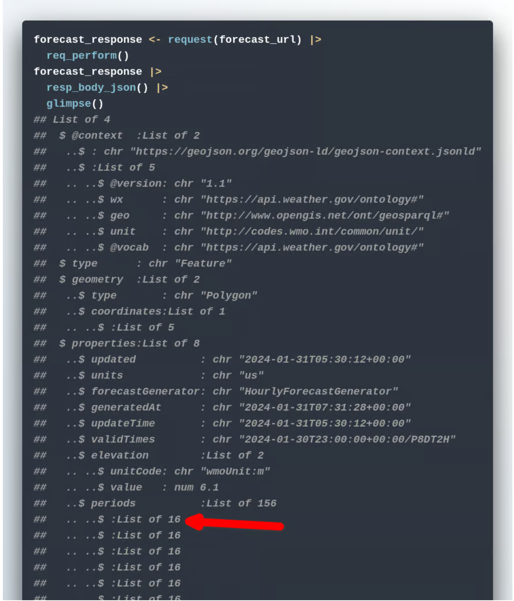
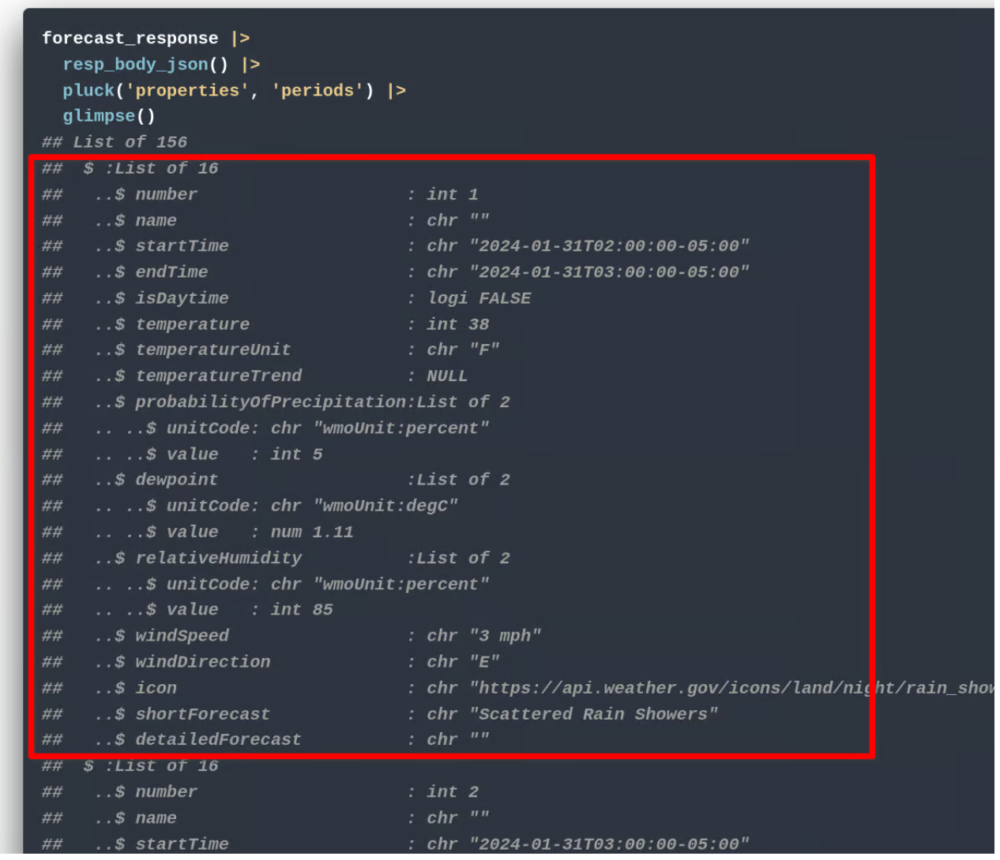
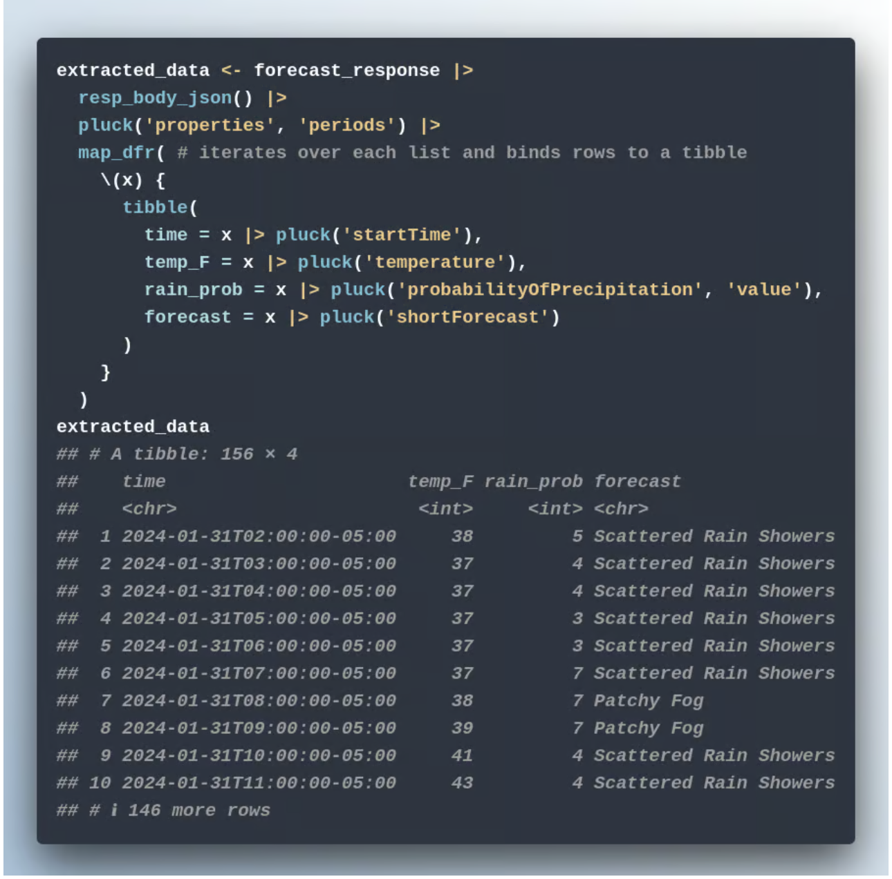
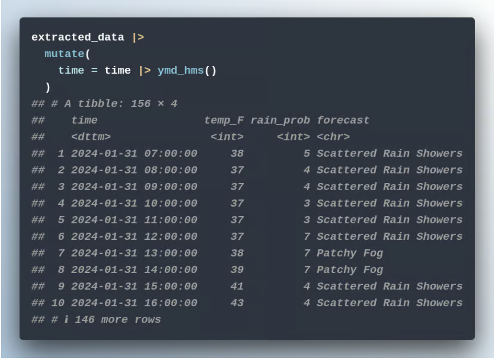

I came across this awesome post from Albert Rapp about how to get weather data from API and I thought it was a great technique to use. Here we go.
What is an API?
We are focusing on two APIs (application programming interfaces) for our project. Broadly speaking, an API is anything that we can throw code at to get results that we want.
Often this refers to some data source that we tap into. But sometimes it also simply means the syntax of code. For example, ggplot2 has a very distinctive API, i.e. a code syntax to create a chart.
In our current case, we will just refer to APIs as data sources and we will need to tap into two such APIs, namely these ones:
US National Weather Service API
Google Geocoding API
The first one will give us weather forecasts based on specified coordinates and the second one will turn any address into coordinates for us. Today, we’ll focus on the first one.
Making requests to an API
If you’ve never worked with APIs, you know that it can feel like data is hidden away behind an API. Thankfully, the {httr2} package helps us a lot, even if we’ve never dealt with APIs before.
Case in point, my fellow YouTubeR (see what I did there? it’s “YouTube” and “R”) Melissa Van Bussel put together an excellent video that shows you how to use {httr2} to call the API of openAI or GitLab.
Anyway, here’s how to make a request to an API to get data:
Navigate to the URL the data can be accessed from
(Optional depending on the API) Authenticate
Get the response
With the National Weather Service, you can easily try this yourself. Just head to the following url using your web browser:
https://api.weather.gov/points/38.8894,-77.0352
If you navigate there, you will get cryptic data like that:

This is what is known as a JSON file. More on that later. For now, notice that what you see at the end of the url after points/ corresponds to the coordinates that are given in the JSON output.
This means that the recipe for calling the weather API is simple: Append points/{lat},{long} at the end of the base_url, i.e. https://api.weather.gov/. In this case, {lat},{long} corresponds to the latitude and longitude of the location you want to get weather forecasts for.
Making a request with {httr2}
The {httr2} syntax to make this work mimics this quite well. Here’s how it looks.

Basically, at the core of every request is the request() function that needs to know the base_url. This returns an <httr2_request> object that can be passed to further req_*() functions to modify the request.
Here, we used req_url_path_append() to modify the request but there are also other functions (and next week we’ll learn about req_url_query()). Finally, to actually make the request, you can pass everything to req_perform().

Getting the response
As you’ve just seen, your request will return a <httr2_response> and if everything went well, the output will also show you Status: 200 OK. You can get the actual content (the JSON that you’ve seen in your web browser earlier) via one of the many resp_*() functions that handle responses.

Working with the response
As you’ve seen in the output, the JSON file you receive is structured as a highly nested list. To make sense of this data, we use glimpse() to understand the structure of the object

And with pluck() you can easily drill down into specific parts of the list. For example, this could be used to get the URL for the hourly forecasts

Repeat process for forecasts
With the new forecast URL, we can get new JSON data about the forecasts for our location.

In that output, we can see that there is a list called periods inside of the properties list that contains lists which always have 16 entries. This might be where our forecast data lives.

Aha! Each of those 16-entries lists seem to correspond to the forecast of one hour. Thus, to get the things like temperature, startTime, probabilityOfPrecipitation, and short_forecast into a nice tibble format, we have to iterate over all of these 16-entries lists and wrap the values we want into a tibble.

And once we have that data, we can transform the time column into a nice date-time object:

This was awesome. !